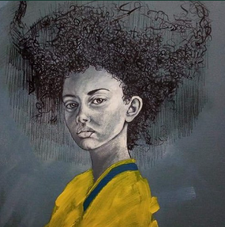
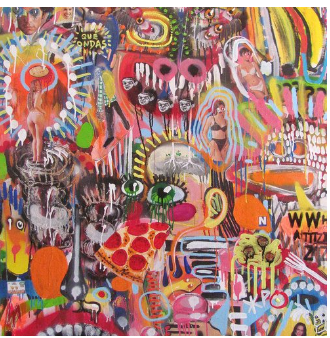
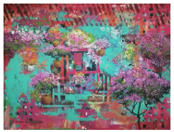
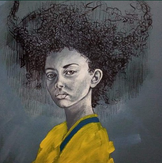
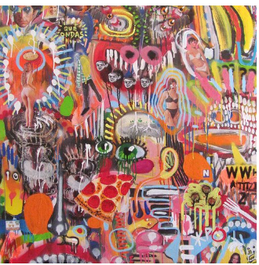
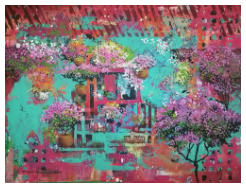

Nos une la pasión por el arte salvadoreño
¿Qué simboliza el clarinero?
 El ave se encuentra en todas partes, en lo rural y lo urbano. Se adapta a cualquier entorno social, es ruidoso y hace ver su presencia en cualquier país de América.
Para la galería, representarnos por medio de un clarinero volando simboliza lo que queremos que suceda con las obras de arte producidas en El Salvador.
Queremos que hagan bulla, que las personas socialicen en medio de ellas y que migren del país en donde sean reconocidas internacionalmente.
El ave se encuentra en todas partes, en lo rural y lo urbano. Se adapta a cualquier entorno social, es ruidoso y hace ver su presencia en cualquier país de América.
Para la galería, representarnos por medio de un clarinero volando simboliza lo que queremos que suceda con las obras de arte producidas en El Salvador.
Queremos que hagan bulla, que las personas socialicen en medio de ellas y que migren del país en donde sean reconocidas internacionalmente.
MISION
Conservar, documentar,
investigar y exhibir las piezas de sus colecciones. Promover
actividades alrededor
de las diversas manifestaciones del arte y la cultura.
Aportar desde diversos ámbitos de la educación,
tanto formal como no formal en beneficio de diferentes públicos.
MISION
Conservar, documentar,
investigar y exhibir las piezas de sus colecciones. Promover
actividades alrededor
de las diversas manifestaciones del arte y la cultura.
Aportar desde diversos ámbitos de la educación,
tanto formal como no formal en beneficio de diferentes públicos.
Compra la obra de arte ideal para tus espacios
Te asesoramos de manera gratitua por WhatsApp
+503 7859-4444
Contactanos
correo:
Clarinero
escribenos un mensaje por WhatsApp y con gusto te atenderemos en brevedad.
horarios de atencion
lunes a viernes -9am a 6:30pm
sabados -9am a 12pm
El ave se encuentra en todas partes, en lo rural y lo urbano. Se adapta a cualquier entorno social, es ruidoso y hace ver su presencia en cualquier país de América.
Para la galería, representarnos por medio de un clarinero volando simboliza lo que queremos que suceda con las obras de arte producidas en El Salvador.
Queremos que hagan bulla, que las personas socialicen en medio de ellas y que migren del país en donde sean reconocidas internacionalmente.
+503 7859-4444
Contactanos
correo: Clarineroescribenos un mensaje por WhatsApp y con gusto te atenderemos en brevedad.